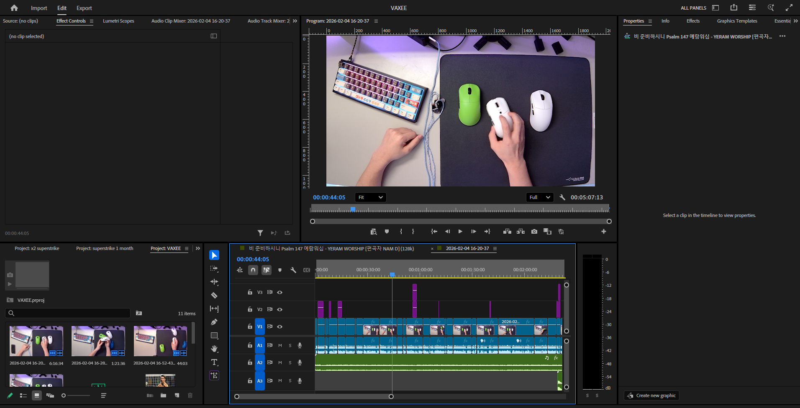

Logitech X2 Superstrike Review
Video Review for YouTube
Project Description
This project is a YouTube review of the Logitech X2 Superstrike, focused on evaluating its performance, design, and overall value for users. The goal was to create an informative yet engaging video that balances technical analysis with clear, accessible communication. This project reflects my visual ethos of combining clean presentation with purposeful storytelling.
Creating the project
- Research & Planning: I began by researching the Logitech G Pro X Superstrike and identifying key aspects to evaluate, including build quality, ergonomics, responsiveness, and overall user experience.
- Structuring the Review: I organized these points into a clear structure to ensure the video would be informative, focused, and easy for viewers to follow.
- Scripting the Outline: I created a rough script to guide filming while still allowing for a natural and conversational delivery.

- Filming Content: I recorded both overhead footage (Overhead camera can be seen in the photo) and close-up shots of the mouse (Using my phone) to clearly demonstrate its design, features, and performance.

- Post-production: I focused on capturing clean, detailed visuals to reinforce credibility and help viewers better understand the product being reviewed, so that during the post-production, I can focus on anything I missed, trim unnecessary footage, and add in edits to make the video more engaging.

Challenges I faced
In post-production, I edited the footage to improve pacing and clarity. This included trimming unnecessary pauses, aligning visuals with spoken explanations, and adding simple text overlays to highlight key points. One major challenge was maintaining viewer engagement while presenting detailed information. Early cuts felt too slow and overly descriptive. I resolved this by tightening the edit, shortening clips, and ensuring that each visual directly supported what was being said. Another issue was achieving consistent lighting and color across shots, which I improved through basic color correction to create a more cohesive look.
Conclusion
The final video effectively communicates the strengths and limitations of the product while maintaining a clear and engaging flow. Through this process, I learned the importance of structuring information for clarity and using visuals intentionally to support spoken content. This project demonstrates my ability to analyze a product, organize information logically, and refine a piece through iteration to improve both style and communication.